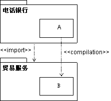
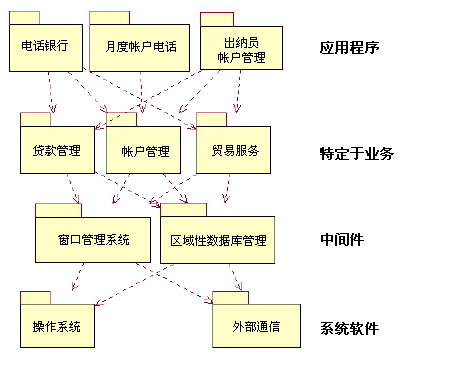

说明
处理子系统之间的依赖关系是构造实施模型的一个重要方面。 如果客户端子系统导入提供端子系统，那么客户端子系统中的元素只能针对提供端子系统中的元素进行编译。
要表达这样的依赖关系，则使用从一个子系统到另一个子系统的导入依赖关系，指出存在依赖关系的子系统。
示例：
以下组件图说明实施子系统之间的导入依赖关系。

子系统“电话银行”具有对子系统“贸易服务”的导入依赖关系，这样就允许“电话银行”中的元素针对“贸易服务”中的公共（可视）元素进行编译。
使用
导入依赖关系的一个重要用途是控制子系统之间的可视性，并对实施者强制使用体系结构。 当在开发早期软件设计人员定义导入依赖关系时，只允许实施者让他们的实施元素引用（编译）所导入子系统中的公共元素。
控制导入有助于维护软件体系结构并避免不需要的依赖关系。
子系统可以按层来组织。
实施模型通常按层来组织。层数不是固定的，而是因情况而异的。下面是具有四层的一个典型体系结构：
-
顶层，即应用程序层，包含应用程序专用的服务。
-
第二层，即业务专用层，它包括在若干应用程序中使用的业务专用组件。
-
中间件层，包含诸如 GUI 构建程序、到数据库管理系统的接口、独立于平台的操作系统服务等组件以及诸如电子表格和图编辑器等的 OLE 组件。
-
底层，即系统软件层，包含诸如操作系统、与特定硬件的接口等的组件。

用于银行系统的分层实施模型的示例。箭头显示子系统之间的导入依赖关系。
|